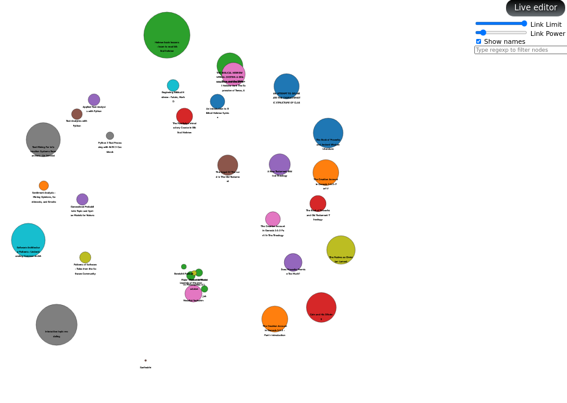
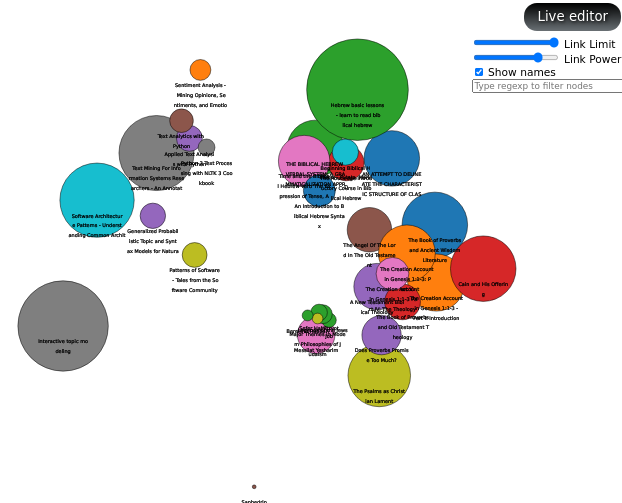
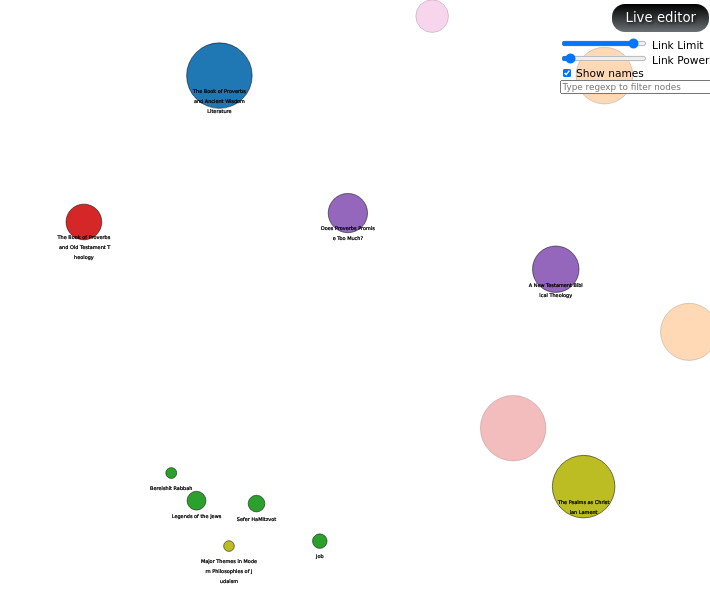

Library Graphic Representation
With the metrics information gathered in the previous section and with the help of D3Js, we can make a graphical representation of the books in my digital library (well, just part of it for this project, but eventually I do plan to include all of them).

- The size of the circle representing a book shows how diverse are the topics found: a smaller circle means a mono-thematic book, while a big circle is a book covering a wide variety of topics.
- The distance between books represents the distance between the topics contained (the closest pair to be more precise).
There are some controls available to play a little with the parameters used for the graphical representation.
The “Link Power” slider allows to “accentuate” the diff-value found, the initial default is 3, increasing it produces a graphic where is easier to pick up thematic groups:

The “Link Limit” control requires to select one book first, then we can regulate how close the other books need to be to the selected one to become visible. This way one can see only the books that are closer to a particular item.

| Previous | Home | Next |
|---|---|---|
| Metrics | θεόφιλος Journey | Interactive Visualization |